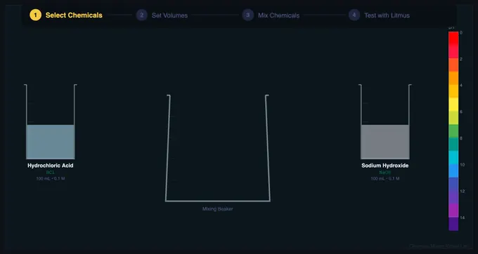

Chemical Mixing Simulation — Mix Acids & Bases
Pour • React • Test with Litmus • Measure pH Instantly
Σ Reaction equations — live pH and product calculations
⚖ Chemical comparison — all 14 chemicals and their pH
💡 What-if coach — tips from current mixture
1 Overview
The Chemical Mixing & pH Testing Virtual Lab lets you select two chemicals from a library of 14 acids and bases, mix them at adjustable volumes, observe the neutralization reaction with animated pouring and bubbling effects, and then test the resulting solution with litmus paper. The simulator calculates pH rigorously using equilibrium chemistry (strong/weak acid-base neutralization, Henderson-Hasselbalch for buffers, polyprotic acid handling) and displays the result on a full pH color scale.
Designed for high school chemistry students, this virtual lab provides safe, unlimited experimentation with dangerous chemicals like concentrated sulfuric acid and sodium hydroxide that would require careful supervision in a real laboratory. Four modes cover hands-on simulation, concept exploration, practice problems, and quizzes.
2 Setting Up the Rig
The simulator opens in Simulate mode with Chemical A set to Hydrochloric Acid (HCl, 0.1 M) and Chemical B set to Sodium Hydroxide (NaOH, 0.1 M). Both volumes default to 100 mL. The canvas shows two source beakers on the left and right, a central mixing beaker, and a pH scale at the bottom.
To begin: select your chemicals from the dropdowns, adjust volumes if desired, then click Mix. Watch the animated pouring streams as both chemicals flow into the mixing beaker. After mixing completes, click Test pH to dip litmus paper into the solution and see the color change. The readout cards below show the chemical equation, reaction product, pH value, and classification (strong acid / weak acid / neutral / weak base / strong base).
3 Running the Test
The canvas renders the complete laboratory setup: two source beakers with colored liquids (colors reflect real appearance), curved pouring streams during mixing, a central mixing beaker whose liquid color transitions to the pH-appropriate color, and CO₂ bubbles when carbonate/bicarbonate reactions produce gas. After testing, a litmus paper strip appears showing the correct color change.
Use the Paper selector (top bar) to switch between Universal indicator paper (full color gradient), Red litmus (stays red in acid, turns blue in base), and Blue litmus (turns red in acid, stays blue in base). The chain instruction system on the canvas guides you step by step: Select Chemicals → Adjust Volumes → Click Mix → Click Test pH → Read Result.
4 Background Theory
Switch to Explore mode to browse concept cards across four categories: Acids, Bases, Reactions, and Applications. The Acids category explains strong vs weak acids, dissociation constants (Ka), and pH calculation for both types. Bases covers strong hydroxides, weak bases like ammonia, and the Kb equilibrium.
The Reactions category covers neutralization, buffer solutions, and the Henderson-Hasselbalch equation with worked examples showing step-by-step calculations. Applications includes real-world uses: antacids neutralizing stomach acid, buffer systems in blood, water treatment with Ca(OH)₂, and industrial processes using these reactions. Each card includes a formula, explanation, and worked example problem.
5 Practice Problems
Practice mode generates randomized problems covering: calculating pH of pure acids/bases, finding pH after mixing specific volumes, determining volumes needed for complete neutralization, and identifying excess reagent in a mixture. Enter your answer and click Check for immediate feedback (5% tolerance for rounding), or use Show Solution for a full step-by-step walkthrough showing every calculation.
Quiz mode presents five multiple-choice questions per session covering conceptual and numerical problems. Topics include identifying strong vs weak acids/bases, predicting reaction products, ranking chemicals by pH, calculating mixed-solution pH, and understanding litmus paper color changes. After completing the quiz, review your performance with detailed feedback on each question.
6 Chemistry Reference
Acids available: Hydrochloric Acid (HCl, 0.1 M), Sulfuric Acid (H₂SO₄, 0.1 M, diprotic), Nitric Acid (HNO₃, 0.1 M), Acetic Acid (CH₃COOH, 0.1 M, Ka = 1.8×10⁻⁵), Citric Acid (C₆H₈O₇, 0.1 M, triprotic), Phosphoric Acid (H₃PO₄, 0.1 M, triprotic), Carbonic Acid (H₂CO₃, 0.04 M, diprotic).
Bases available: Sodium Hydroxide (NaOH, 0.1 M), Potassium Hydroxide (KOH, 0.1 M), Calcium Hydroxide (Ca(OH)₂, 0.02 M, diprotic), Ammonia (NH₃, 0.1 M, Kb = 1.8×10⁻⁵), Sodium Bicarbonate (NaHCO₃, 0.1 M, amphoteric), Sodium Carbonate (Na₂CO₃, 0.1 M), Magnesium Hydroxide (Mg(OH)₂, 0.02 M, suspension).
Key equations: Strong acid pH = −log[H⁺]; Weak acid pH = −log(√(Ka×C)); Buffer pH = pKa + log([A⁻]/[HA]); Neutralization: H⁺ + OH⁻ → H₂O. Gas evolution occurs when acids react with carbonates/bicarbonates (CO₂↑).
7 Tips & Safety Notes
- At equal concentrations and equal volumes, strong acid + strong base = pH 7 (complete neutralization). Try HCl + NaOH at 100 mL each.
- Weak acid + strong base creates a buffer solution (partially neutralized). Try CH₃COOH + NaOH at 100 mL + 50 mL to see pH ≈ 4.74.
- Watch for CO₂ gas evolution: mix any acid with NaHCO₃ or Na₂CO₃ to see animated bubbles.
- Diprotic acids (H₂SO₄) have twice the moles of H⁺ per mole of acid. You need twice the base volume to fully neutralize them.
- In a real lab, always add acid to water, never the reverse. With concentrated sulfuric acid, adding water to acid causes violent boiling.
- Pair this simulator with the Litmus Paper Test Simulator for deeper pH indicator exploration.
Understanding Acid-Base Reactions and pH Testing

Acid-base chemistry is fundamental to high school and university-level chemistry. When acids and bases are mixed, they undergo neutralization reactions that produce salts and water. The pH scale (0–14) quantifies how acidic or basic a solution is, where pH 7 is neutral, values below 7 are acidic, and values above 7 are basic (alkaline).
Common Acids and Bases in Chemistry
| Chemical | Formula | Type | pH (0.1 M) | Common Use |
|---|---|---|---|---|
| Hydrochloric Acid | HCl | Strong acid | 1.00 | Lab reagent, stomach acid |
| Sulfuric Acid | H₂SO₄ | Strong acid | 0.70 | Batteries, fertilizers |
| Acetic Acid | CH₃COOH | Weak acid | 2.87 | Vinegar |
| Sodium Hydroxide | NaOH | Strong base | 13.00 | Soap making, drain cleaner |
| Ammonia | NH₃ | Weak base | 11.13 | Cleaning products |
| Sodium Bicarbonate | NaHCO₃ | Amphoteric | 8.34 | Baking soda, antacid |
The fundamental difference between strong and weak acids lies in their degree of dissociation. Strong acids like HCl, H₂SO₄, and HNO₃ dissociate completely in water, meaning every molecule releases its hydrogen ions. Weak acids like acetic acid (vinegar) and carbonic acid only partially dissociate, with their Ka equilibrium constant determining the extent. This distinction is critical for predicting pH and understanding buffer behavior. The virtual lab above demonstrates these differences with rigorous calculations that match real laboratory results.
The Neutralization Reaction
Neutralization is the quintessential acid-base reaction. When H⁺ ions from an acid meet OH⁻ ions from a base, they combine to form water (H⁺ + OH⁻ → H₂O). The remaining ions form a salt. For example, HCl + NaOH produces NaCl (table salt) + H₂O. This reaction releases approximately 57 kJ/mol of heat energy, which is why mixing concentrated acids and bases generates significant heat. The resulting pH depends on the relative strengths and amounts of acid and base mixed.
Buffer Solutions and Henderson-Hasselbalch
When a weak acid is partially neutralized by a strong base, the resulting mixture of weak acid (HA) and its conjugate base (A⁻) forms a buffer solution. Buffers resist pH change when small amounts of acid or base are added. The Henderson-Hasselbalch equation (pH = pKa + log([A⁻]/[HA])) predicts buffer pH. This is biologically critical: blood maintains pH 7.4 through the carbonic acid/bicarbonate buffer system. The simulator lets students create buffers by mixing acetic acid with varying amounts of NaOH.
Litmus Paper and pH Indicators
Litmus paper provides a quick qualitative test for acidity or basicity. Universal indicator paper contains a mixture of dyes that produce a continuous color gradient from red (pH 0) through green (pH 7) to purple (pH 14). Red litmus paper turns blue only in basic solutions (pH > 7), while blue litmus paper turns red only in acidic solutions (pH < 7). In the simulator, students can observe these color changes after mixing any combination of chemicals, building intuition about pH before learning the mathematical calculations.
Who Uses This Simulator?
This chemical mixing and pH testing virtual lab is designed for high school chemistry students studying acid-base equilibrium, teachers demonstrating neutralization reactions safely, and anyone preparing for chemistry exams. It provides unlimited safe experimentation with chemicals that require careful handling in real laboratories. The practice and quiz modes reinforce understanding of pH calculations, reaction predictions, and buffer chemistry.
Explore Related Simulators
If you found this chemical mixing simulator helpful, explore our Litmus Paper Test Simulator, Specific Heat Capacity Simulator, Ideal Gas Law Simulator, Boyle's Law Simulator, Fluid Flow Simulator, and Titration Simulator for more hands-on practice.